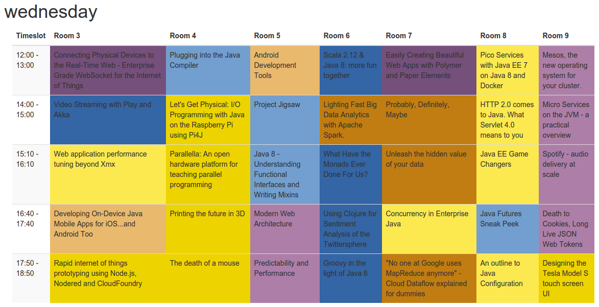
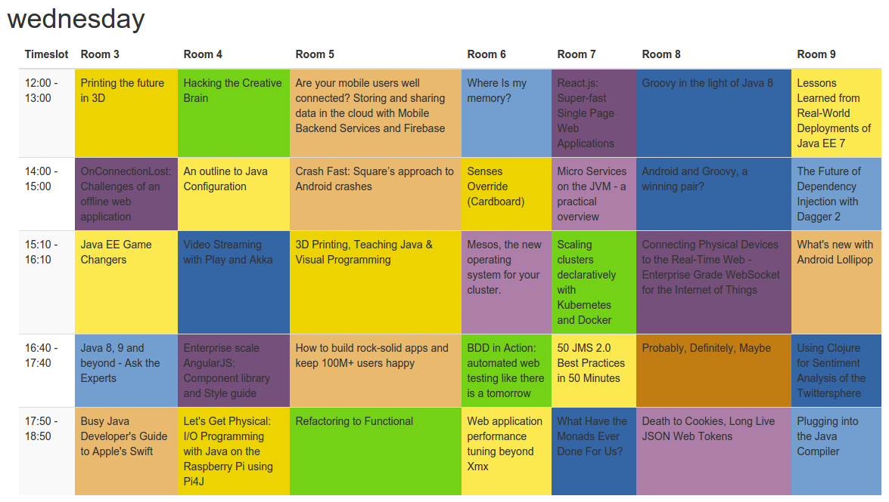

Prototyping an enterprise webapp at Devoxx Hackergarten
For the 10th year in a row, I attended DevoxxBe.
It’s my favorite Java conference, but the talk schedule isn’t always optimal: sometimes I want to see 2 great talks at the same time!
So at the Hackergarten at Devoxx, between attending talks, a few of us started building a webapp to improve the schedule.
We’re calling the prototype OptaConf and it’s under Apache License.
For the past 4 years, I ‘ve been working in my corner of the world (OptaPlanner, Drools, etc),
so my experience on other enterprise Java technologies (JavaEE) is getting a bit stale.
Presentations (such as those at Devoxx) keep me in touch with the ever changing Java enterprise world,
but nothing beats getting some personal hands-on experience by writing a realistic webapp.
I wrote the backend.
The frontend was graciously contributed by other Hackergarten attendees: Ixchel, David, Anne Marije, Celestino and Federico.
Special thanks to the Hackergarten host Andres for bringing us to together
and to other Hackergarten attendees (sometimes the project lead of the specific technology) to help us overcome pitfalls.
Backend
Writing the backend turned out to be a breeze, using JavaEE 7 technologies:
Plain Java to model the domain classes, such as
Speaker,Room, etc.JAXRS to expose a REST service to serve data to the webUI.
This was literally as simple as adding a few annotations (
@GET,@Path, …) and a short entry in theweb.xml. Brilliant.For more info, see RESTEasy’s documentation.
JsonReader to import the talks data from the Devoxx CFP API which is then transformed to our domain classes.
I didn’t use JAXRS to read that REST stream, because JsonReader gives me a DOM approach to the data,
which I then directly map to our domain classes, without having to model their domain class too (which have no further use to us).Thanks to Arun and the JavaEE 7 samples to point me in the direction of the right tech for the job.
OptaPlanner to optimize the schedule
This was also very easy to use for me ;)
For more info, see the OptaPlanner documentation.
CDI to glue it all together
This was a bit harder: although the initial
@Injectworked nicely,
using a producer to provide dummy test data (before the Devoxx CFP import was written) had me stuck on a few pitfalls:There are 2 annotations named
@Producesand I automatically imported the wrong one.I had an ambiguous dependency between the producer and the original object, so I had to resort to adding
@Vetoedon the original object…
For more info, see Weld’s documentation.
WildFly 8 to deploy the webapp.
This is so fast, it’s amazing. Startup and deploying our webapp take about 3 seconds.
The maven-wildfly-plugin to deploy the webapp from command line:
Just make sure a wildfly server is running first: if it’s not, the error message isn’t entirely clear.
IntelliJ to deploy the exploded webapp directly from my IDE
It uses the JBoss app server plugin, which is only available IntelliJ Enterprise, not in IntelliJ Community.
First an annoying pitfall needed to be fixed: the exploded directory needs to end with
.war.
For more info, see the WildFly website.
JPA Hibernate to persist the data
This hasn’t been implemented yet. Once your session expires (after 30 minutes) your data is currently lost.
All in all, this has come together well. In less than 1 day’s work, I was able to implement the entire backend:
import the Devoxx, optimize it and expose it as a REST service.
Of course, having the experts around to immediately solve pitfalls, helped.
What I really liked it the pom.xml configuration. This is the entire dependency tree to have all those techs available:
<dependencies>
<dependency>
<groupId>org.optaplanner</groupId>
<artifactId>optaplanner-core</artifactId>
<version>6.2.0.CR1</version>
</dependency>
<dependency>
<groupId>javax</groupId>
<artifactId>javaee-api</artifactId>
<version>7.0</version>
<scope>provided</scope>
</dependency>
</dependencies>Frontend
I didn’t work on the frontend myself, so it’s hard to comment (but that won’t stop me). We had 3 incarnations.
All used AngularJS, some with bower and other stuff.
Personally I feel all web ui technologies are clunky: every year there’s a new one being hyped
and we should all migrate to that one. Some (Flex for example) went from hype to dead in less than a year.
Anyway, ranting aside, the frontend guys did a nice job, especially Celestino’s contributions very nicely visualized the schedule:
Before: the original Devoxx 2014 schedule

Above is the original Devoxx 2014 schedule for Wednesday.
Each track (which are a set of related talks) has it own background color.
Notice how in the first timeslot, there are 2 Web & HTML5 talks (purple) at the same time.
And in the second timeslot, there are 2 Cloud & BigData talks (brown) at the same time.
And there are no Methodology talks (green) on Wednesday! That means Methodology talks are almost unavoidable on Thursday… oh, the horror!
After: the POC optimized Devoxx 2014 schedule

Above is the schedule after it’s optimized with OptaPlanner for Wednesday.
Notice how I can now watch all the talks of an entire track without missing a single one.
This optimization already takes speaker conflicts into account.
Additional constraints should be easy to add, such as:
Popular talks get bigger rooms
Track room stability: to minimize people having to switch rooms
No 2 rock star speakers at the same time
Rock stars get prime time timeslots
Social speakers don’t get morning slots
… and many more
We just need more input data, such as: which talks are popular, which speakers are rock stars, …
Conclusion
On the backend, it has become a lot simpler. JavaEE 7 just works. It’s much simpler than it’s predecessors. Most rough edges are gone.
For full disclosure: I work for Red Hat, so I stuck to their implementations whenever there was a choice.
On the frontend however… there’s just so much choice and so many trade-offs between the technologies,
that I am reluctant to recommend anything really: they all suck, all in their own special way.
Either you’re writing lots of indirectional JavaScript
or you’re dealing with a long monolithic compilation or you’re stuck with a over-engineered, chatty lifecycle.
And those are just the top 3 web UI frameworks!